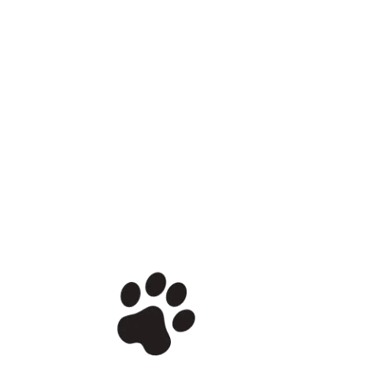
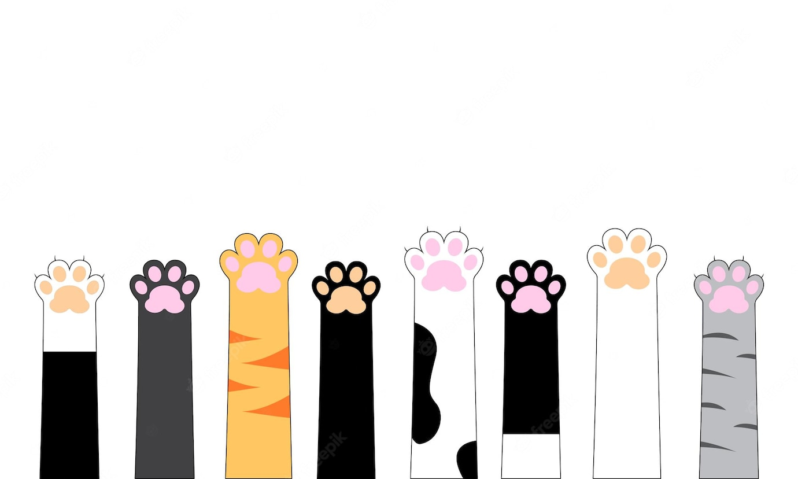

<!--  -->
<router-outlet></router-outlet>
<!--  -->
<!--  -->

<div *ngIf="auth.user$ | async; then authenticated; else guest">
  <!-- template will replace this div -->
</div>

<!-- User NOT logged in -->
<ng-template #guest>
  <div *ngIf="auth.show" class="wholePage">
    
    <div class="loginDiv">
      <h1>Pomozite izgubljenim ljubimcima da se vrate svojim vlasnicima</h1>
      <h3>Da biste pristupili sajtu povezite se sa vasim Gmail nalogom.</h3>

      <button mat-stroked-button (click)="auth.googleSignin()">
        <i class="fa fa-google"></i> Connect Google
      </button>
    </div>
  </div>
</ng-template>

<!-- User logged in -->
<ng-template #authenticated> </ng-template>
